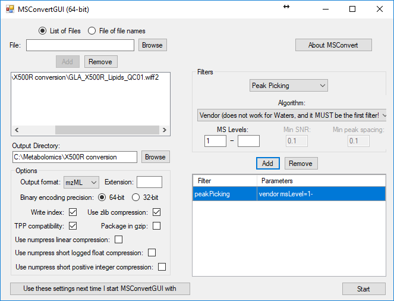

Recently, SCIEX started to use new format WIFF2 which has already been used in 500R QTOF system. Although the direct conversion from WIFF2 to ABF is not possible yet, the format can be imported by using ProteoWizard MSconvert as follows.
The summary is:
1. Convert WIFF2 to mzML (centroid) using ProteoWizard.
2. Convert mzML to ABF using ABF converter.*
3. Process in MS-DIAL.
*Direct import of mzML is also ok in MS-DIAL where the minimum peak hight of peak detection parameter tab should be set to around 1–10.
Below is the detail.
1. Download
 ProteoWizard
ProteoWizard.
2. Run MSConvert from ProteoWizard folder.
3. Convert wiff2 files to mzml using setting bellow including also centroiding (this is important otherwise files in mzml profile files would be extremely large).

4. Run ABF converter.
5. Convert mzml files to ABF format.
6. Run MS-DIAL.
7. In 'Start up a project', Data type (MS1): Centoid data; Data type (MS/MS): Centoid data
8. In 'Analysis parameter data', Peak detection, Minimum peak
height: use values between 5 and 10 (check the results using different values to get a reasonable number of features).
Note:
For SCIEX profile data we have found that Minimum peak height of 2,000–3,000 works well but for mzml centroid -> ABF data much lower values should be used.
This procedure works well for data acquired in (i) MS1 only mode and (ii) MS1 with data-dependent acquisition (DDA).
Unfortunately, the current work flow does not work for SWATH-MS data yet although it can be processed in MS_DIAL to get MS1 information in MS-DIAL.
After SCIEX releases the Software Developer Kit which is needed for modification of ABF converter, the flow will become easier and SWATH-MS data can be also imported.